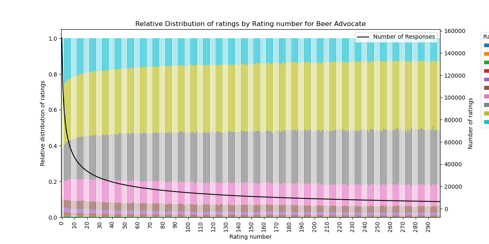
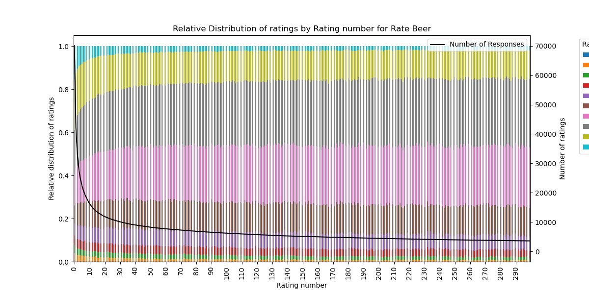
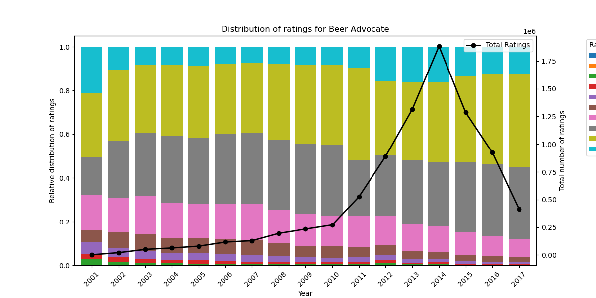
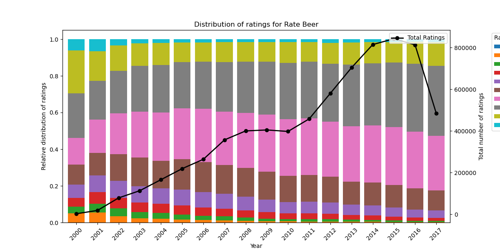

Choosing a beer can be difficult man! Choices everywhere and so many niches of extraordinarily hidden drinks that only the true aficionado know about. It is perhaps no surprise then that RateBeer and BeerAdvocate tried to make this ancient wisdom more accessible by utilizing thousands of voluntary reviewing on hundreds of different beer types from all over the world. But, of course, reviewers can be more or less biased and perhaps a curious beer enthusiast will have skewed information when considering their next drinking break. In this study, we (drink and) work on the thousands of different reviews from both RateBeer and BeerAdvocate to identify what patterns seem to influence reviews and in which way. We were first interested in finding if the Gandalfs of the beer drinking community (experienced reviewers) rate their beverages differently. We tried to identify them by the number of reviews they gave and the arcane vocabulary they use. We then considered if reviewers tend to rate better (or worse) the beers from their own (or other) countries and checked if the distance of the reviewer with their brewery is also a factor (after all, the grass is always greener on the other side, why would the beer not be better as well). Following this work on both beer wisdom and space, an analysis on time was needed to complete our understanding of the Beer Reviewing Arts. We therefore analysed seasonality to find if certain periods around the year, or just the weather in general, impact beer ratings and individual beer styles. MISSING NEURAL NETWORK
In this part of the analysis, we want to investigate how the ratings provided by a user change over time. This can be shown by plotting the rating number on the x-axis and the relative distribution of ratings on the y-axis. In this section we would also have a second axis showing the total amount of ratings provided at the given rating number.
 The plots show that the relative distribution of extreme ratings, such as the top- and bottom-tier, decreases when the rating number increases. We can also see that the reviewers in Beer Advocate tend to provide a higher rating on average, than the reviewers in Rate Beer. Later on we will see that this interesting finding could be due to the difference in the user's origin. Nearly all the users in the BeerAdvocate database are from the US whereas the distribution of the users' origin in Rate Beer is a bit more diverse. Before we make any conclusions on how the number of reviews provided might affect the rating provided, we should look into whether there exists an overall change in the relative distribution of ratings over time regardless of the number of ratings provided earlier on.
 For the Beer Advocate dataset we can see an opposite tendency of previous finding, as the amount of top-tier ratings increases over time. The previous finding can therefore not be explained only by the change in ratings over time. Furthermore, a high spike in the number of reviews in 2014 indicated that a lot of the users in BeerAdvocate has provided several reviews during that year. For the distribution of ratings in the Rate Beer dataset there does seem to be a similar tendency as the previous plot of the relation between rating number and rating distribution. The increase in number of ratings provided exhibits a more linear trend compared to the Beer Advocate dataset. For the Rate Beer dataset we can not conclude that the amount of rating provided is caused by the rating number as there appears to be a similar trend over the years, which could be caused by other factors such as an increase in the amount of premium beers available. If beers in general tend to have a higher standard, this could make it hard to differentiate between the different beers thus could lead to a reduction of top- and bottom-tier ratings over the years.
Alright, but could these general trends of the experienced reviewers giving lower ratings be observed if we zoom on individual beers? For this part, we consider 15 reviews given as the threshold to be an experienced, Gandalf-like beer reviewer. Then, we take the 10 most reviewed beers of BeerAdvocate and RateBeer to have as much data as possible to work with and plot the distribution of the ratings for new, experienced and all reviewers.

Now that the rating distributions are plotted, a few things can be striking. Firstly, the Gandalf (or experienced) reviewers consistently rate lower than the new reviewers. This is something that seems to follow the general trend observed in the previous section. Secondly, the ratings are dominated by the experienced reviewers while the new are somewhat off-beat. This means that, for these 10 beers, a curious drinker browsing the different beverages proposed will make a choice knowing the ratings of the experienced reviewers. So, would this be good? Afterall, the wisest (presumably) of the beer drinking community are the ones whose opinion is mostly seen and surely, they have the best advice for others follow. Well, the answer is not necessarily that evident. On the one hand, it is possible that the experienced reviewers, strong from their greater knowledge on the beverages of the mystical brewing arts, can rely on a much larger selection of past experiences to give a more insightful rating compared to a naiver rating from the new reviewers. On the other hand, if these 10 beers are indeed the most popular choices, perhaps the experienced reviewers give lower scores because they seek more refined beers which might not be preferred or appreciated by new drinkers. So, all in all, the choices of the Gandlalfs are the ones that drive the ratings of the top 10 reviewed beers and they are not too kind in their rating. Would this also be the case for RateBeer?

Generally, the previous observations still hold for RateBeer with experienced reviewers rating lower than new while still dominating the mixed ratings. It also seems that greater indecisiveness exists for the new reviewers as their ratings are more dispersed than the experienced ones. A particular case is the Budweiser beer in which new reviewers give both the highest and lowest ratings. Perhaps the greater occurrence of extreme ratings from the new reviewers is partly due to this indecisiveness.
Next we look at whether the time of year, the season, has any influence on ratings. We grouped the ratings into months, as a less fine grained division into quarters would be very ingranular, and not enable us to see how trends develop as the year progresses, while a grouping into weeks or days would produce a lot of data and big dataframes. Let's first explore, if the time of year leads to a general rating "high" or "low", for example reviewers being more satisfied with their beer in the summer rather than the winter.
We see that the average ratings do not change with the month, at least not significantly, thus the hypothesis that the time of year has a general effect on the ratings in total does not hold, rather the results are kind of boring. However, lets also have a look at how the beers get rated throughut the year depending on the beer style.
Before we analyse the rating, let's first check which beer is a "summery" beer and which beers are "wintery", by comparing the amount of each reviewed by month. The graph below filters out beer styles which do not show a difference of at least 14 ranks throughout the entire year, in order to not crowd the graph with straight and uninteresting lines. The value of 14 was chosen as it offers a nice balance between not hiding important data and now not crowding the graph. The function also removes beer styles which have less than 500 reviews for at least one month, in order to not flood the analysis with beers which have few reviews, where the change in review count might not be significant.
Beers such as: